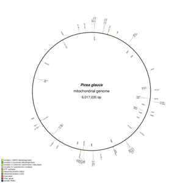
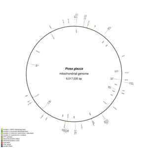

PhD thesis committee meeting
Shaun Jackman
2014-08-22
Shaun Jackman
Genome Sciences Centre, BC Cancer Agency
Vancouver, Canada
@sjackman
github.com/sjackman
sjackman.ca

White Spruce Organelles
Organellar Genomes of White Spruce (Picea glauca): Assembly and Annotation
 
Shaun Jackman
Genome Sciences Centre, BC Cancer Agency
Vancouver, Canada
@sjackman
github.com/sjackman
sjackman.ca